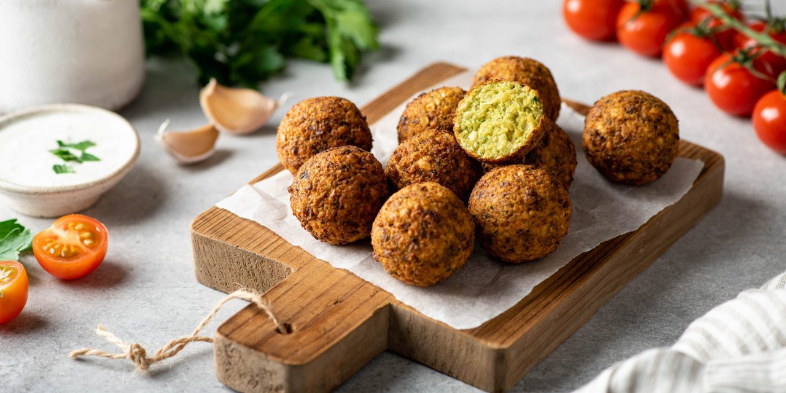

приготовление:
-
Замочить на ночь 250 гр. нута (при возможности лучше поменять пару раз воду).
-
Почистить 1 луковицу, 2 зубчика чеснока, помыть пучок кинзы и петрушки (примерно по 15 гр.). Сложить все это в комбайн с носадкой-ножами, измельчить до относительной однородности. Добавить в массу специи: 1 ч.л. кориандра, 1 ч.л. соли, 0.5 ч.л. паприки, 0.5 ч.л. куркумы, 2 ч.л. кумина и 2 ст.л. кунжута. Все тщательно перемешать.
-
Литр подсолнечного масла налить в кастрюлю с толстым дном, поставить на плиту греться (у меня на индукционной режим 8 из 10). Пока масло греется - начать лепить плотные шарики из нута. Небольшие, примерно 3,5 см в диаметре. Выкладывать на плёнку. Когда в масле начнут появляться первые пузырьки - можно положить тестовую фалафелину готовиться. Если масло сразу шипит вокруг нее и фалафелина всплыла через минуты 2 — тогда можно готовить и остальные. Фалафель не должен рассыпаться, иначе может быть недостаточная температура масла (я готовила на индукции 8 из 10). Готовятся примерно 5 минут каждая партия. Много малафелей одновременно кидать не стоит, масло начинает сильно остывать, гдето 7-8 шт за раз.
-
Масло, когда остынет, можно отфильтровать в бутылку обратно и использовать второй раз. Утилизировать масло можно тоже остудив, налив в бутылку и выкинув в мусор.